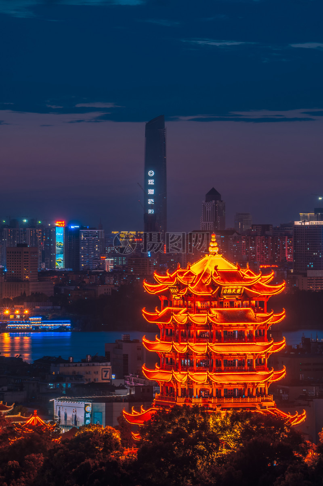

武汉著名景点

黄鹤楼
黄鹤楼位于湖北省武汉市长江南岸的武昌蛇山之巅，濒临万里长江，是“江南三大名楼”之一，自古享有“天下江山第一楼”和“天下绝景”之称。黄鹤楼是武汉市标志性建筑，与晴川阁、古琴台并称“武汉三大名胜”。

东湖
东湖，又称裹脚湖，位于湖北省武汉市中心城区东部，是武汉市最大的湖泊。东湖生态旅游风景区面积88平方公里，由听涛、磨山、落雁、吹笛、白马和珞洪6个片区组成。曾经屈原泽畔行吟，刘备磨山郊天，李白湖边放鹰；毛泽东主席48次视察，64个国家的贵宾留下足迹。
武汉大学
武汉大学环绕东湖水，坐拥珞珈山，校园环境优美，风景如画，被誉为“中国最美丽的大学”。学校占地面积5195亩，建筑面积280万平方米。中西合璧的宫殿式建筑群古朴典雅，巍峨壮观，26栋早期建筑被列为“全国重点文物保护单位”。